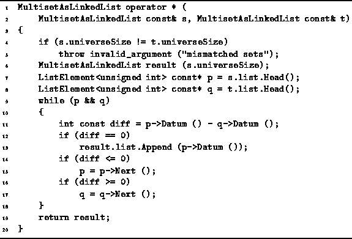
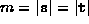

Data Structures and Algorithms
with Object-Oriented Design Patterns in C++
Data Structures and Algorithms
with Object-Oriented Design Patterns in C++
The implementation of the intersection operator for the
MultisetAsLinkedList class
is similar to that of union.
However, instead of merging of two ordered, linked lists
to construct a third,
we compare the elements of two lists
and append an item to the third only when
it appears in both of the input lists.
The intersection operator, operator*,
is shown in Program  .
.

Program: MultisetAsLinkedList Class Intersection Operator Definition
The main loop of the program traverses the linked lists of both input operands at once using two pointers (lines 9-18). If the next element in each list is the same, that element is appended to the result and both pointers are advanced. Otherwise, only one of the pointers is advanced--the one pointing to the smaller element.
The number of iterations of the main loop actually done depends on the contents of the respective linked lists. The best case occurs when both lists are identical. In this case, the number of iterations is m, where . In the worst case case, the number of iterations done is m+n. Therefore, the running time of the intersection operation, operator*, is O(m+n).
 Copyright © 1997 by Bruno R. Preiss, P.Eng. All rights reserved.
Copyright © 1997 by Bruno R. Preiss, P.Eng. All rights reserved.